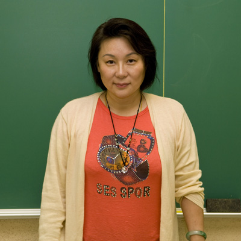

|
|||||||||||||||||
|
|
密西根中文學校 Michigan Chinese School  教 師：吳宣萱-
三十二年的教學經驗，任教於密西根中文學校第十五年。擁有雙主修營養及學前教育學士，公共衛生碩士，高血脂症博士後研究。吳老師熱愛中文教學,和小朋友一
起
遊戲成長是她保持年輕的小秘訣.吳老師和小朋友在課堂上一起快樂的學習.家長和老師今日在小朋友心中種下中文學習的小種籽,並以快樂和歡笑灌溉,日後必能
得到豐碩的成果
Shari Wu, holds double major in
Nutrition and pre-school education, minor in Spanish
Batcher degree, a Master degree of Public Health
Nutrition Education and Post-doctorate fellowship in
hyper-lipidimia research.
She has thirty years of teaching experiences, had taught in Michigan Chinese School for eleven years. It is her hobby to teach Chinese here. Playing with the kids is the secret of keeping her look young. She always says that “I just wanted to have fun with my students.” She believes that the seed of life long learning of Chinese which we are planting now, needs to be nurtured with joy and happiness. 教學目標： 以輕鬆愉快的課堂學習環境，培養對學習中文的興趣，達到聽、説、讀、寫的目標 ; 並落實生活化的中文，能將中文活用於生活當中。 My goal: To provide students with a fun and interesting immerging language learning environment through varieties of activities, such as: songs, games, crafts, projects, and stories. Children should be able to listen, speak, read and write some simple Chinese characters and apply to daily life at the end of the school year. 上課活動安排: • 聽－提供小朋友學習中文的環境，中文課聽中文，聆聽課文、句形變化、及故事等 • 説－中文課講中文，討論、表達、溝通等 • 讀－朗讀、認字、閱讀小品故事 • 寫－生字、造詞、造句、或作文 Class activities:
• Listen- catch the time and tune of Chinese spoken language from the text book, sentence pattern, and extra stories • Speak- communicate with teacher and classmates in Chinese • Read- read out loud after teacher on new vocabularies, phrases, and small stories • Write- practice on new vocabularies, phrases, sentences or composition. 教學內容： • 全新版華語第一冊課本，情境描述（看圖説故事）、背誦、朗讀、聽寫、板書、文字遊戲 • 課外教材－小品故事欣賞、介紹傳統中國及美國節日、字典、普通常識．．．等 Contents:
• New version of Hua Yue first year book provided by Taiwan government: story and retell, reciting, read out loud, dictating, practice writing, playing word games. • Extra supplement: share stories, introduce traditional Chinese Festivals and local American Holidays, use dictionary, common sense…etc. 教學進度： • 大約兩週上一課 • 每上完一課小考, 每上完一個單元期中考、兩個單元期末考 Curriculum:
• Totally 12 lessons. • Every two weeks complete one lesson. • Quiz on every lesson completed, midterm on every unit finished, and final exam when two units are done. |
||||||||||||||||
| |
|
|
|||||||||||||||
|
|
|||||||||||||||||